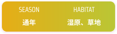
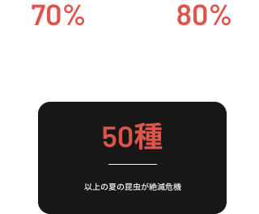

生命の輝き
夏の湿原
気温
15-25°C
温暖で過ごしやすい
ベストシーズン
6~8月
雪解けから新緑へ
出会える生き物
50種以上
最盛期

夏、生命が溢れる楽園
Summer - Season of Abundance
湿原が一年で最もにぎわう季節。植物も動物も活発になり、
命の循環が最高潮に達する。
夏の湿原を代表する命たち
短い夏を、全力で生き抜きます。
Eriophorum vaginatum
ワタスゲ
植物
夏の湿原を白い綿毛で彩る。風に揺れる姿は
湿原の風物詩。
夏の生活
雪がとけた水の中で、いち早く芽を出す植物のひとつ。
3月下旬から4月ごろに白い花を咲かせ、独特の香りで虫を呼び寄せます。湿地のまわりに群れて生え、他の植物
より早く咲くことで、しっかり受粉できるように工夫
しています。


Anax parthenope
ギンヤンマ
植物
日本を象徴する美しい鳥。春には湿原で
子育てを行う。
夏の生活
6月から7月にかけて花を咲かせ、8月には白い綿毛をつけ
る。この綿毛は、種を風に乗せて遠くまで運ぶためのし
くみである。夏の強い日差しの中、湿原一面を白く染め
る光景は見事である。湿原特有の酸性の土と豊富な水を
好み、他の植物が育ちにくい環境でも元気に生きる。


春の湿原が失われつつある
春に多くの生物が繁殖する湿原は、開発や乾燥で
急速に失われています。


春の命を守るために
春の湿原が失われれば、
ミズバショウの白い花も、
タンチョウの雛も、
カエルの鳴き声も、
すべて消えてしまいます。